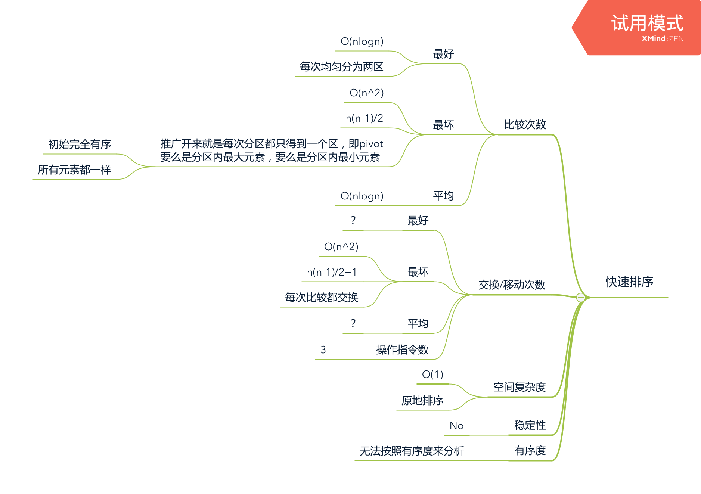

算法描述：
- a为待排序数组，n为数组长度
- 在a中取一个数作为pivot，将a分为两个区，pivot左边的都 < pivot，pivot右边的都 >= pivot。
- 对 pivot 左边的元素 重复分区动作
- 对 pivot 右边的元素 重复分区动作
伪代码：
quickSort(a) {
pivot_i = partition(a); // 获得pivot的下标
quickSort(pivot_i's left part);
quickSort(pivot_i's right part);
}其中分区算法：
- 定义 i 作为下标，它具有以下特性：a[< i] < pivot ; a[>= i] >= pivot
- 定义 pivot = a[n-1]，即取 a 的最后一个元素作为pivot
- 初始 i = 0，意思是其左边还没有比 pivot 小的元素
- 遍历 a[0 … n-1-1]，从头到倒数第二个元素，遍历用下标为 j
- 如果 a[j] < pivot，那么 swap(a[i], a[j])，i++
- 当遍历结束时，a[i] = pivot
- 返回 i
- 在整个过程满足：a[0 … i-1] < pivot，a[i … j-1] >= pivot
- 因此如果 a[j] < pivot，把 a[i], a[j]互换位置，然后 i++，这个关系依旧保持不变，并且还使得a[j] >= pivot。
和归并排序的区别：
- 归并排序将a等分成两半，快速排序则不一定
- 归并排序在将两边合并的时候不能简单串接，而需要依次对比两边元素，从而保证合并结果有序。快速排序则通过一个pivot巧妙的避开了这一点。pivot左边的都比pivot小，pivot右边的都比pivot大，而且左右两边都是有序的，那么直接合并就行了。
算法复杂度分析：
如果每次分区都分为大小相等的两个区，那么复杂度和归并排序一样，O(nlogn)。
如果每次分区都只分得一个区，每次选择的pivot是最大/最小元素，那么复杂度为O(n^2)，以1 2 3 4 5 6 7 8这个有序数组来解释：
- 第1次分区，pivot=8，得到
1 2 3 4 5 6 7，比较次数 7 - 第1次分区，pivot=7，得到
1 2 3 4 5 6，比较次数 6 - 第1次分区，pivot=6，得到
1 2 3 4 5，比较次数 5 - …
- 第k次分区，pivot=2，得到
1，比较次数 1
总比较次数累加，就是等差数列累加，为
- 7 * (7 + 1) / 2
- = (8 - 1) * (8 - 1 + 1) / 2
- = 28
换成公式就是 n * (n - 1) / 2 = O(n^2)
public void sort(int[] a) {
quickSort(a, 0, a.length - 1);
}
private void quickSort(int[] a, int start, int end) {
if (start >= end) {
return;
}
int pivot_i = partition(a, start, end);
// 对 pivot_i 左边的元素进行排序
quickSort(a, start, pivot_i - 1);
// 对 pivot_i 右边的元素进行排序
quickSort(a, pivot_i + 1, end);
}
/**
* 分区
*
* @param a
* @param start
* @param end
* @return 返回分区点
*/
private int partition(int[] a, int start, int end) {
// 取数组最后一个元素作为pivot
int pivot = a[end];
// 要计算的pivot的下标
// pivot_i 左边的都是 < pivot的元素
// pivot_i 右边的(含)都是 >= pivot的元素
int pivot_i = start;
for (int j = start; j <= end - 1; j++) {
if (a[j] < pivot) {
if (pivot_i != j) {
// 因为 pivot_i 右边(含) 都是 >= pivot 的元素
// 一个元素 < pivot，则将其和 pivot_i 的位置互换
// pivot_i++
int tmp = a[pivot_i];
a[pivot_i] = a[j];
a[j] = tmp;
}
pivot_i++;
}
}
// 把 pivot 和 pivot_i 元素位置互换
a[end] = a[pivot_i];
a[pivot_i] = pivot;
return pivot_i;
}